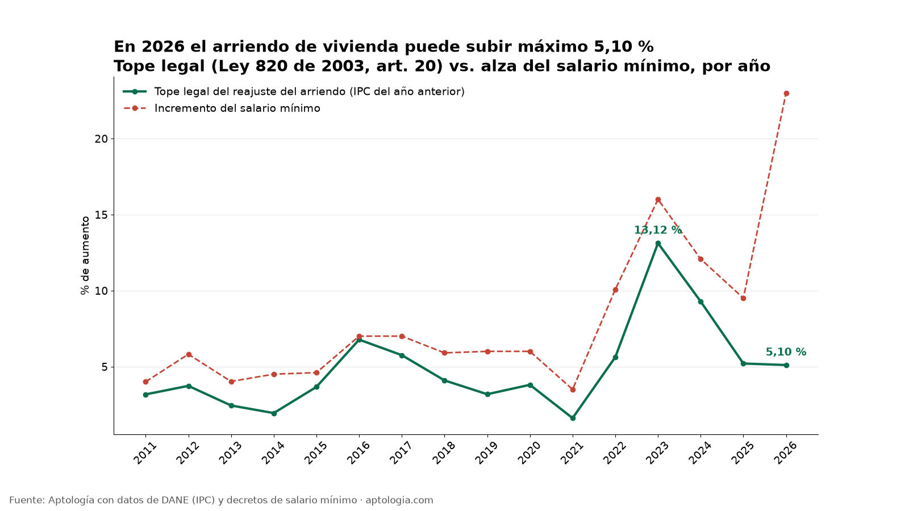
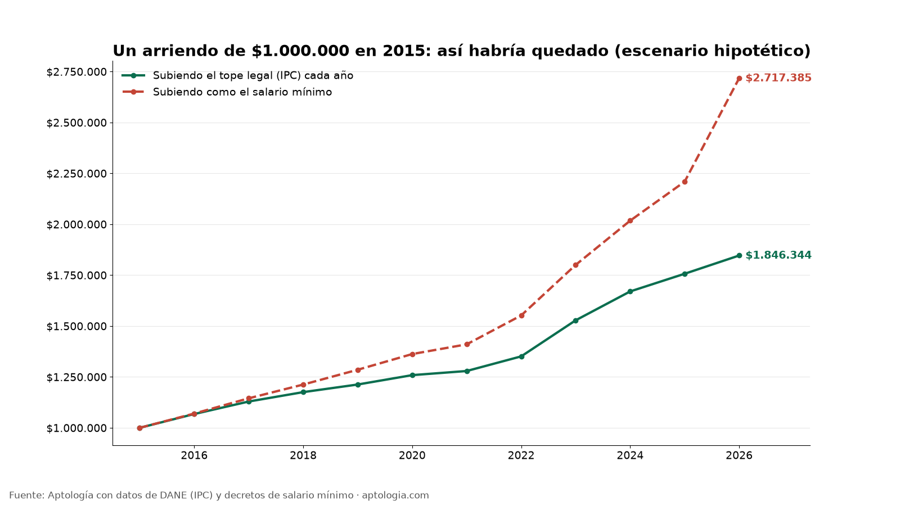
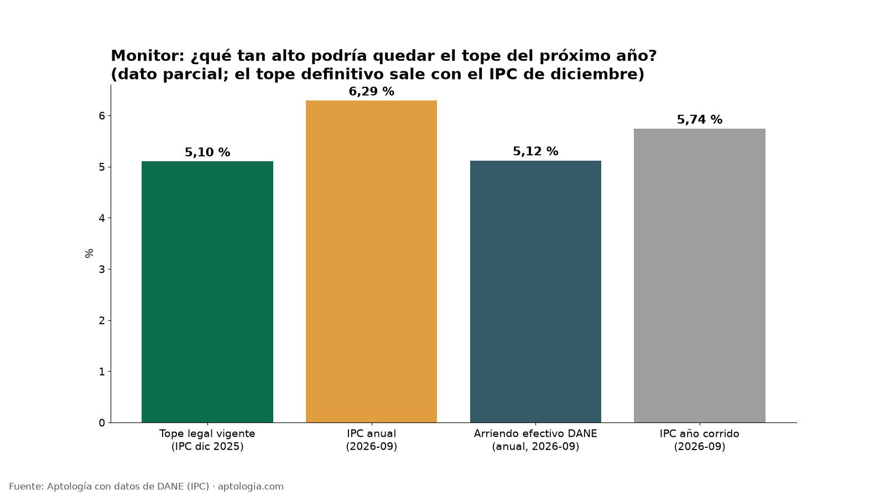

Incremento del arriendo 2026: ¿cuánto sube? Máximo 5,10 % (calculadora y monitor)
Estudio con datos abiertos (CC BY 4.0). Versión original: https://www.aptologia.com/estudios/cuanto-sube-el-arriendo
En 2026 el arriendo de vivienda urbana en Colombia puede subir como máximo 5,10 %, que es la inflación (IPC) de 2025 publicada por el DANE el 8 de enero de 2026 (DANE). Así lo fija el artículo 20 de la Ley 820 de 2003: un arriendo de $1.000.000 puede pasar como máximo a $1.051.000, y solo cuando se cumplen 12 meses desde el último reajuste.
Resumen: el tope del reajuste del arriendo es el IPC del año anterior, no el aumento del salario mínimo (23 % en 2026). Desde 2016, un arriendo que subió siempre el tope legal creció 85 %; si hubiera subido como el salario mínimo, habría crecido 172 %.
Actualizado: 9 de octubre de 2026 · Próxima actualización: 8 de enero de 2027, con el IPC de diciembre de 2026.

La cifra: 5,10 %
| Dato | Valor | Fuente |
|---|---|---|
| Tope legal del reajuste del arriendo de vivienda en 2026 | 5,10 % | IPC anual a diciembre de 2025, DANE + Ley 820, art. 20 |
| Tope en 2025 | 5,20 % | IPC 2024, DANE |
| Tope más alto de la serie (2011-2026) | 13,12 % (en 2023) | IPC 2022, DANE |
| Alza del salario mínimo 2026 | 23 % ($1.423.500 → $1.750.905) | Decreto 1469 de 2025, ratificado por el Decreto 159 de 2026 |
| Variación anual del "arriendo efectivo" en el IPC, dic. 2025 | 5,31 % | Boletín IPC dic. 2025, DANE |
Cómo se calcula (fórmula)
- Tome su arriendo actual (por ejemplo $1.500.000).
- Multiplíquelo por el IPC del año anterior en decimal: 1.500.000 × 0,051 = $76.500 de aumento máximo.
- Nuevo arriendo máximo: 1.500.000 × 1,051 = $1.576.500.
Reglas de la Ley 820 de 2003 (texto): - Art. 20: cada 12 meses de ejecución del contrato bajo un mismo precio, el arrendador puede subir el canon hasta el 100 % del IPC del año calendario anterior. No es automático en enero: se aplica en el aniversario del contrato o del último reajuste, y debe avisarse al inquilino. - Art. 18: el canon mensual no puede pasar del 1 % del valor comercial del inmueble. - El aumento puede ser menor o cero; nunca mayor. La norma es para vivienda urbana; los locales comerciales se rigen por lo que diga el contrato.
Histórico: el tope de cada año (2011-2026)
| Año del reajuste | Tope (IPC año anterior) | Alza del salario mínimo |
|---|---|---|
| 2016 | 6,77 % | 7,00 % |
| 2017 | 5,75 % | 7,00 % |
| 2018 | 4,09 % | 5,90 % |
| 2019 | 3,18 % | 6,00 % |
| 2020 | 3,80 % | 6,00 % |
| 2021 | 1,61 % | 3,50 % |
| 2022 | 5,62 % | 10,07 % |
| 2023 | 13,12 % | 16,00 % |
| 2024 | 9,28 % | 12,07 % |
| 2025 | 5,20 % | 9,50 % |
| 2026 | 5,10 % | 23,00 % |
Serie completa desde 2011 en datos.csv. El alza del salario mínimo se calcula con los valores en pesos de cada decreto.
Hallazgo: el arriendo de un inquilino con contrato vigente sube menos que el salario mínimo
En los 16 años de la serie (2011-2026), el alza del salario mínimo fue mayor que el tope legal del arriendo todos los años. 2016 fue el año más parejo (7,00 % frente a 6,77 %). En 2026 la brecha es la más grande de la serie: 23 % frente a 5,10 %.
Escenario hipotético con un arriendo de $1.000.000 en 2015: - Si cada año subió el tope legal: $1.846.344 en 2026. - Si hubiera subido como el salario mínimo: $2.717.385 en 2026, o sea $871.041 más al mes.

Ojo: esto aplica dentro de un contrato. El precio que se pide por un apartamento nuevo en el mercado no tiene tope legal, así que este escenario no dice cuánto subió el arriendo de mercado.
Monitor 2027: ¿cuánto podría subir el arriendo el próximo año?
El tope de 2027 será el IPC de diciembre de 2026, que el DANE publica hacia el 8 de enero de 2027. Hoy hay un dato parcial: a septiembre de 2026, la inflación anual fue 6,29 % y la del año corrido 5,74 % (anexo DANE, sep. 2026). Ese mismo mes, el arriendo efectivo subía 5,12 % anual. Esto no es el tope de 2027: es solo un indicio de que podría quedar por encima del 5,10 % actual. Actualizamos este monitor cada mes.

Con datos de Aptología: cuánto es el tope en pesos sobre el arriendo típico de cada ciudad
Precios pedidos, no de cierre. Las cifras de Aptología son medianas del precio que se pide en los avisos publicados el 5 de octubre de 2026, no lo que finalmente se paga ni se firma.
Aplicamos el tope de 5,10 % a la mediana del precio pedido en los avisos de apartamentos en arriendo que Aptología registró el 5 de octubre de 2026 (datos abiertos). Es una referencia ilustrativa, no el arriendo que pagan los inquilinos con contrato.
| Ciudad | Avisos vivos | Mediana pedida (Aptología) | Aumento máximo 5,10 % | Canon máximo |
|---|---|---|---|---|
| Medellín | 144.045 | $4.100.000 | $209.100 | $4.309.100 |
| Bogotá | 86.200 | $2.800.000 | $142.800 | $2.942.800 |
| Cali | 17.593 | $1.600.000 | $81.600 | $1.681.600 |
| Rionegro | 14.873 | $2.500.000 | $127.500 | $2.627.500 |
| Barranquilla | 8.015 | $2.600.000 | $132.600 | $2.732.600 |
| Bucaramanga | 7.026 | $1.850.000 | $94.350 | $1.944.350 |
| Cúcuta | 4.337 | $1.300.000 | $66.300 | $1.366.300 |
| Cartagena | 3.590 | $3.600.000 | $183.600 | $3.783.600 |
Metodología
- Datos públicos (DANE): variación anual del IPC total a diciembre de cada año (anexo de variaciones 2003-2025). Variación anual de la subclase 04130100 "Arriendo efectivo" de los anexos de diciembre de 2024 y 2025, y anexo de septiembre de 2026 para el monitor.
- Datos públicos (decretos): salario mínimo mensual de cada año según los decretos de salario mínimo. El 2026 sale de los Decretos 1469 de 2025 y 159 de 2026.
- Regla legal: tope del año A = IPC anual a diciembre del año A-1 (Ley 820, art. 20).
- Datos de Aptología: mediana del precio pedido por ciudad (avisos vivos de apartamentos, foto del 2026-10-05). Solo se usa en la tabla de pesos por ciudad.
- Escenario hipotético: $1.000.000 en 2015, al que se le aplica cada año, desde 2016, el tope o el alza del salario mínimo.
- Actualización:
actualizar.pydescarga el anexo más reciente del DANE y regeneradatos.csv,calculadora/ipc_por_anio.jsony las gráficas.
Limitaciones
- El tope es legal, no es un dato de mercado. No mide cuánto suben los arriendos de los contratos nuevos.
- El "arriendo efectivo" del DANE solo está incluido aquí para 2024 y 2025 (anexos verificados). Los años anteriores quedan pendientes.
- El salario mínimo de 2026 fue fijado de forma transitoria por el Decreto 159 de 2026, mientras decide el Consejo de Estado.
- Las medianas de Aptología son precios pedidos en avisos, no precios cerrados, y Medellín incluye una oferta amplia de avisos de alto valor.
- Esto no es asesoría jurídica.
Preguntas frecuentes
¿Cuánto sube el arriendo en 2026? Máximo 5,10 %, que fue el IPC de 2025 según el DANE. En un arriendo de $1.000.000 son $51.000 más.
¿El arriendo sube con el salario mínimo? No. El tope es el IPC del año anterior (Ley 820, art. 20). El salario mínimo subió 23 % en 2026, pero eso no cambia el tope del arriendo de vivienda.
¿Desde cuándo me pueden subir el arriendo? Desde que se cumplen 12 meses del contrato o del último reajuste, no automáticamente en enero, y con aviso al inquilino.
¿Cuánto sube el arriendo de un local comercial en 2026? El tope del IPC de la Ley 820 aplica a vivienda urbana. En un local comercial manda lo pactado en el contrato, que muchas veces también usa el IPC como referencia.
¿Cuánto subirá el arriendo en 2027? Se sabrá el 8 de enero de 2027, cuando el DANE publique el IPC de diciembre de 2026. A septiembre de 2026, la inflación anual iba en 6,29 %.
¿Me pueden subir más del IPC si el dueño hizo mejoras? El artículo 20 de la Ley 820 de 2003 fija el tope del reajuste en el 100 % del IPC del año anterior para vivienda urbana y no prevé una excepción por mejoras. Ante un caso concreto, conviene una consulta jurídica.
Demanda de búsqueda
Trends (2026-10-09): 'incremento arriendo' (12 de promedio en 5 años) supera a 'aumento arriendo' (8) y a 'cuanto sube el arriendo' (2). Por eso la query principal pasa a 'incremento arriendo 2026'. El pico es en enero, con el IPC del DANE, y diciembre es el segundo mes. Comparación: Google Trends. Son valores relativos, sin volúmenes absolutos. El autocompletado de Google, consultado el mismo día, está en meta.json.
Cómo citar
Pinzón Pineda, D. M. (2026). Incremento del arriendo 2026: ¿cuánto sube? Máximo 5,10 % (calculadora y monitor). Aptología. Con datos del DANE (IPC) y de los Decretos 1469 de 2025 y 159 de 2026. https://www.aptologia.com/estudios/cuanto-sube-el-arriendo. Datos: datos.csv, licencia CC BY 4.0.